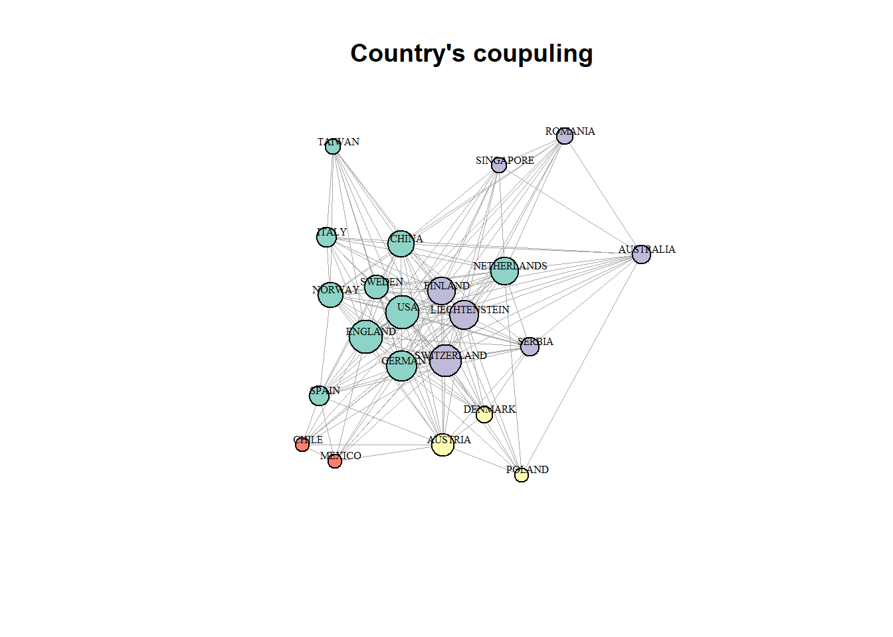

Bibliometric analysis
Carlos Carbajal
1 June 2018
Bibliometric analysis
Bibliometrics is statistical analysis of written publications, such as books or articles. Citation analysis is a commonly used bibliometric method which is based on constructing the citation graph, a network or graph representation of the citations between documents. Many research fields use bibliometric methods to explore the impact of their field, the impact of a set of researchers, the impact of a particular paper, or to identify particularly impactful papers within a specific field of research. Data from citation indexes can be analyzed to determine the popularity and impact of specific articles, authors, and publications.
This analysis was developed using the package develop for R from Aria, M & Cuccurullo, C:
Aria, M. & Cuccurullo, C. (2017) bibliometrix: An R-tool for comprehensive science mapping analysis, Journal of Informetrics, 11(4), pp 959-975, Elsevier.
For further information regarding this package visit http://www.bibliometrix.org.
Initialization
To develop the analysis, R requires the use of the bibliometrix package.
# Loading the required libraries
require(bibliometrix, quietly = TRUE)The next step is to load the dataset obtained either from WoS Clarative analytics or Scopus databases. The bibliometrix package offers functions to import files from *.txt or *.bib files using the function readFiles(). Then, the loaded data needs to be structured into a dataframe using the function convert2df().
# Importing data from WoS-export
bm <- readFiles("1_data/wos-digital_innovation-2000-2018.bib")
# Structuring data as a dataframe
bm <- convert2df(bm, dbsource = "isi", format = "bibtex")Bibliometric analysis
The next step is to analyse the data to extract and relate the citation information, using the function biblioAnalysis() the dataset is analysed. Then, a summary of the bibliography is presented using the function summary().
# blibliometric analysis
bm_anl <- biblioAnalysis(bm, sep = "; ") # It is necesary to identify the separator character used by the database.
# Printing bibliometric summary
bm_smm <- summary(object = bm_anl, k = 12) # k represents the number of entries shown in the summary##
##
## Main Information about data
##
## Documents 154
## Sources (Journals, Books, etc.) 130
## Keywords Plus (ID) 376
## Author's Keywords (DE) 443
## Period 2001 - 2018
## Average citations per documents 6.162
##
## Authors 350
## Author Appearances 392
## Authors of single authored documents 41
## Authors of multi authored documents 309
##
## Documents per Author 0.44
## Authors per Document 2.27
## Co-Authors per Documents 2.55
## Collaboration Index 2.89
##
##
## Annual Scientific Production
##
## Year Articles
## 2001 1
## 2002 1
## 2005 2
## 2007 1
## 2008 1
## 2009 1
## 2010 4
## 2011 3
## 2012 4
## 2013 14
## 2014 9
## 2015 27
## 2016 27
## 2017 47
## 2018 12
##
## Annual Percentage Growth Rate 19.42201
##
##
## Most Productive Authors
##
## Authors Articles Authors Articles Fractionalized
## 1 LYYTINEN K 5 GRAY M 2.00
## 2 BERENTE N 4 RADOIU D 2.00
## 3 YOO Y 4 YOO Y 1.92
## 4 ARTS K 3 NAMBISAN S 1.75
## 5 LINDGREN R 3 VOM BROCKE J 1.53
## 6 MATHIASSEN L 3 BOUDREAU KJ 1.50
## 7 NAMBISAN S 3 LOEBLER H 1.50
## 8 SVAHN F 3 BERENTE N 1.42
## 9 VOM BROCKE J 3 LYYTINEN K 1.42
## 10 BOUDREAU KJ 2 AHMED F 1.00
## 11 BRUNSWICKER S 2 BATT C 1.00
## 12 DEMIRKAN H 2 CARPO M 1.00
##
##
## Top manuscripts per citations
##
## Paper TC
## 1 YOO Y; HENFRIDSSON O; LYYTINEN K,(2010),INF. SYST. RES. 157
## 2 YOO Y; BOLAND RJ; LYYTINEN K; MAJCHRZAK A,(2012),ORGAN SCI. 137
## 3 LUSCH RF; NAMBISAN S,(2015),MIS Q. 124
## 4 BOUDREAU KJ,(2012),ORGAN SCI. 85
## 5 FICHMAN RG; DOS SANTOS BL; ZHENG ZE,(2014),MIS Q. 45
## 6 NAMBISAN S,(2013),J. ASSOC. INF. SYST. 43
## 7 BARRETT M; OBORN E; ORLIKOWSKI WJ; YATES JA,(2012),ORGAN SCI. 37
## 8 ARTS K; VAN DER WAL R; ADAMS WM,(2015),AMBIO 26
## 9 YOO Y,(2013),J. ASSOC. INF. SYST. 25
## 10 MIDDLETON KM,(2001),J. MORPHOL. 22
## 11 NYLEN D; HOLMSTROM J,(2015),BUS. HORIZ. 21
## 12 LEE J; BERENTE N,(2012),ORGAN SCI. 17
## TCperYear
## 1 19.62
## 2 22.83
## 3 41.33
## 4 14.17
## 5 11.25
## 6 8.60
## 7 6.17
## 8 8.67
## 9 5.00
## 10 1.29
## 11 7.00
## 12 2.83
##
##
## Most Productive Countries (of corresponding authors)
##
## Country Articles Freq SCP MCP
## 1 USA 31 0.2199 26 5
## 2 ENGLAND 21 0.1489 12 9
## 3 AUSTRALIA 9 0.0638 9 0
## 4 ITALY 9 0.0638 8 1
## 5 SWEDEN 7 0.0496 3 4
## 6 SWITZERLAND 6 0.0426 2 4
## 7 GERMANY 5 0.0355 2 3
## 8 NETHERLANDS 5 0.0355 4 1
## 9 SPAIN 5 0.0355 3 2
## 10 CANADA 4 0.0284 4 0
## 11 TAIWAN 4 0.0284 4 0
## 12 CHINA 3 0.0213 3 0
##
##
## SCP: Single Country Publications
##
## MCP: Multiple Country Publications
##
##
## Total Citations per Country
##
## Country Total Citations Average Article Citations
## 1 USA 633 20.419
## 2 ENGLAND 162 7.714
## 3 SWEDEN 33 4.714
## 4 BRAZIL 26 13.000
## 5 SCOTLAND 26 8.667
## 6 AUSTRALIA 20 2.222
## 7 CANADA 10 2.500
## 8 SWITZERLAND 9 1.500
## 9 GERMANY 6 1.200
## 10 NETHERLANDS 6 1.200
## 11 SERBIA 4 1.333
## 12 TAIWAN 3 0.750
##
##
## Most Relevant Sources
##
## Sources
## 1 MIS QUARTERLY
## 2 2015 48TH HAWAII INTERNATIONAL CONFERENCE ON SYSTEM SCIENCES (HICSS)
## 3 AMBIO
## 4 APOLLO-THE INTERNATIONAL ART MAGAZINE
## 5 ORGANIZATION SCIENCE
## 6 JOURNAL OF THE ASSOCIATION FOR INFORMATION SYSTEMS
## 7 BUSINESS HORIZONS
## 8 ICERI2014: 7TH INTERNATIONAL CONFERENCE OF EDUCATION RESEARCH AND INNOVATION
## 9 MIS QUARTERLY EXECUTIVE
## 10 PROCEEDINGS OF THE EUROPEAN INTEGRATION: BETWEEN TRADITION AND MODERNITY VOL 5
## 11 2010 IEEE INTERNATIONAL FREQUENCY CONTROL SYMPOSIUM (FCS)
## 12 2011 4TH INTERNATIONAL CONFERENCE OF EDUCATION RESEARCH AND INNOVATION (ICERI)
## Articles
## 1 7
## 2 4
## 3 4
## 4 4
## 5 4
## 6 3
## 7 2
## 8 2
## 9 2
## 10 2
## 11 1
## 12 1
##
##
## Most Relevant Keywords
##
## Author Keywords (DE) Articles Keywords-Plus (ID) Articles
## 1 DIGITAL INNOVATION 29 TECHNOLOGY 15
## 2 INNOVATION 11 MODEL 10
## 3 DIGITAL;INNOVATION 4 INNOVATION 9
## 4 OPEN INNOVATION 4 DESIGN 8
## 5 CASE STUDY 3 DIGITAL INNOVATION 8
## 6 DIGITAL TECHNOLOGIES 3 INTERNET 7
## 7 MOBILE PHONE 3 KNOWLEDGE 6
## 8 SERVICE INNOVATION 3 PERSPECTIVE 6
## 9 ACCOUNTING INFORMATION SYSTEMS 2 SYSTEMS 6
## 10 AFRICA 2 CAPABILITIES 5
## 11 BUSINESS INFORMATICS 2 INFORMATION-SYSTEMS 5
## 12 CHINA 2 INFORMATION-TECHNOLOGY 5plot(x = bm_anl, k = 12, pause = FALSE)


## Warning: Removed 1 rows containing missing values (position_stack).## Warning: Removed 1 rows containing missing values (geom_path).

# Obtaining most cited references by article and author
# bm$CR[3] # Used to define the appropriated separatord fiels
bm_cit_art <- citations(M = bm, field = "article", sep = "; ")
head(bm_cit_art$Cited, n = 12)## CR
## YOO YJ, 2010, INFORM SYST RES, V21, P724, DOI 101287/ISRE11000322
## 19
## BOLAND RJ, 2007, ORGAN SCI, V18, P631, DOI 101287/ORSC10700304
## 14
## YOO Y, 2012, ORGAN SCI, V23, P1398, DOI 101287/ORSC11200771
## 13
## TILSON D, 2010, INFORM SYST RES, V21, P748, DOI 101287/ISRE11000318
## 10
## ZITTRAIN JL, 2006, HARVARD LAW REV, V119, P1974
## 9
## BOUDREAU KJ, 2012, ORGAN SCI, V23, P1409, DOI 101287/ORSC11100678
## 8
## EISENHARDT KM, 1989, ACAD MANAGE REV, V14, P532, DOI 102307/258557
## 8
## FICHMAN RG, 2014, MIS QUART, V38, P329, DOI 1025300/MISQ/2014/38201
## 8
## YOO Y, 2010, MIS QUART, V34, P213
## 8
## LEE J, 2012, ORGAN SCI, V23, P1428, DOI 101287/ORSC11100707
## 7
## VON HIPPEL ERIC, 2005, DEMOCRATIZING INNOVA
## 7
## ANDERSON P, 1990, ADMIN SCI QUART, V35, P604, DOI 102307/2393511
## 6bm_cit_aut <- citations(M = bm, field = "author", sep = "; ")
head(bm_cit_aut$Cited, n = 12)## CR
## YOO Y BRYNJOLFSSON E HENFRIDSSON O YOO YJ NAMBISAN S
## 33 30 22 21 20
## [ANONYMOUS] BOLAND RJ EISENHARDT KM ORLIKOWSKI WJ BOUDREAU KJ
## 18 17 17 17 16
## BALDWIN C Y FICHMAN RG
## 14 14# Obtaining the most cited local references
bm_cit_loc <- localCitations(M = bm, sep = "; ")## Articles analysed 100
## Articles analysed 154## By Article
head(bm_cit_loc$Papers, n = 12)## Paper
## 2001 - 1 MIDDLETON KM, 2001, J MORPHOL
## 2002 - 2 IKEBE Y, 2002, ENABLING SOCIETY WITH INFORMATION TECHNOLOGY
## 2005 - 3 WONG S, 2005, REG STUD
## 2005 - 4 YAGI K, 2005, ELECTRON COMMUN JPN PT II-ELECTRON
## 2007 - 5 WHEELER QD, 2007, AUTOMATED TAXON IDENTIFICATION IN SYSTEMATICS: THEORY, APPROACHES AND APPLICATIONS
## 2008 - 6 KUO CC, 2008, PADDY WATER ENVIRON
## 2009 - 7 XU WEIZHANG XW, 2009, PROCEEDINGS OF THE 2009 2ND INTERNATIONAL CONGRESS ON IMAGE AND SIGNAL PROCESSING, VOLS 1-9
## 2010 - 8 YOO Y, 2010, INF SYST RES
## 2010 - 9 TOPOL EJ, 2010, SCI TRANSL MED
## 2010 - 10 SUN J, 2010, 2010 IEEE INTERNATIONAL FREQUENCY CONTROL SYMPOSIUM (FCS)
## 2010 - 11 O'CARROLL F, 2010, 4TH INTERNATIONAL TECHNOLOGY, EDUCATION AND DEVELOPMENT CONFERENCE (INTED 2010)
## 2011 - 12 NICHOLS J, 2011, SERVICE-ORIENTED PERSPECTIVES IN DESIGN SCIENCE RESEARCH: 6TH INTERNATIONAL CONFERENCE
## DOI Year LCS GCS
## 2001 - 1 10.1002/JMOR.1058 2001 0 22
## 2002 - 2 <NA> 2002 0 0
## 2005 - 3 <NA> 2005 0 0
## 2005 - 4 10.1002/ECJB.20160 2005 0 0
## 2007 - 5 <NA> 2007 0 5
## 2008 - 6 10.1007/S10333-008-0137-7 2008 0 2
## 2009 - 7 <NA> 2009 0 0
## 2010 - 8 10.1287/ISRE.1100.0322 2010 0 157
## 2010 - 9 10.1126/SCITRANSLMED.3000484 2010 1 17
## 2010 - 10 10.1109/FREQ.2010.5556295 2010 0 0
## 2010 - 11 <NA> 2010 0 0
## 2011 - 12 <NA> 2011 0 0## By Author
head(bm_cit_loc$Authors, n = 12)## Author LocalCitations
## 358 YOO Y 17
## 116 LYYTINEN K 15
## 120 MAJCHRZAK A 15
## 22 BOLAND RJ 13
## 47 DOS SANTOS BL 8
## 216 ZHENG ZE 8
## 230 BOUDREAU KJ 8
## 248 FICHMAN RG 8
## 18 BERENTE N 7
## 285 LEE J 7
## 309 NAMBISAN S 7
## 75 HOLMSTROM J 3# Calculating authors dominance factor
bm_dom <- dominance(results = bm_anl, k = 12)
bm_dom## Dominance Factor Multi Authored First Authored
## SVAHN F 1.0000000 3 3
## BRUNSWICKER S 1.0000000 2 2
## MANCINI D 1.0000000 2 2
## ARTS K 0.6666667 3 2
## YOO Y 0.5000000 4 2
## BOUDREAU KJ 0.5000000 2 1
## DEMIRKAN H 0.5000000 2 1
## KLEINSMANN M 0.5000000 2 1
## LOEBLER H 0.5000000 2 1
## LUSCH RF 0.5000000 2 1
## NAMBISAN S 0.3333333 3 1
## BERENTE N 0.2500000 4 1
## Rank by Articles Rank by DF
## SVAHN F 5 1
## BRUNSWICKER S 7 2
## MANCINI D 12 3
## ARTS K 3 4
## YOO Y 2 5
## BOUDREAU KJ 6 6
## DEMIRKAN H 8 7
## KLEINSMANN M 9 8
## LOEBLER H 10 9
## LUSCH RF 11 10
## NAMBISAN S 4 11
## BERENTE N 1 12# Calculating the authors h-index
## One author: Yoo Youngjin
bm_hin_yoo <- Hindex(M = bm, authors = "YOO Y", sep = ";", years = 10)
bm_hin_yoo$H## Author h_index g_index m_index TC NP
## 1 YOO Y 3 4 0.3333333 319 4bm_hin_yoo$CitationList## [[1]]
## Authors Journal Year
## 1 BERENTE N; LYYTINEN K; YOO Y 2015 48TH HAWAII INTERNATIONAL 2015
## 2 YOO Y JOURNAL OF THE ASSOCIATION FOR 2013
## 3 YOO Y; BOLAND RJ; LYYTINEN K; ORGANIZATION SCIENCE 2012
## 4 YOO Y; HENFRIDSSON O; LYYTINEN INFORMATION SYSTEMS RESEARCH 2010
## TotalCitation
## 1 0
## 2 25
## 3 137
## 4 157## One author: Yoo Youngjin
bm_hin_nam <- Hindex(M = bm, authors = "NAMBISAN S", sep = ";", years = 10)
bm_hin_nam$H## Author h_index g_index m_index TC NP
## 1 NAMBISAN S 3 3 0.5 176 3bm_hin_nam$CitationList## [[1]]
## Authors Journal Year
## 1 NAMBISAN S; LYYTINEN K; MAJCHR MIS QUARTERLY 2017
## 3 NAMBISAN S JOURNAL OF THE ASSOCIATION FOR 2013
## 2 LUSCH RF; NAMBISAN S MIS QUARTERLY 2015
## TotalCitation
## 1 9
## 3 43
## 2 124## The 12 most productive authors
authors <- gsub(pattern = ",", replacement = " ", x = names(bm_anl$Authors)[1:12]) # Extracting the 12 most productive authors
bm_hin <- Hindex(M = bm, authors = authors, sep = ";", years = 10)
bm_hin$H## Author h_index g_index m_index TC NP
## 1 LYYTINEN K 3 5 0.3333333 306 5
## 2 BERENTE N 2 4 0.2857143 20 4
## 3 YOO Y 3 4 0.3333333 319 4
## 4 ARTS K 3 3 0.7500000 37 3
## 5 LINDGREN R 1 2 0.2500000 5 3
## 6 MATHIASSEN L 1 2 0.2500000 5 3
## 7 NAMBISAN S 3 3 0.5000000 176 3
## 8 SVAHN F 1 2 0.2500000 5 3
## 9 VOM BROCKE J 1 2 0.3333333 6 3
## 10 BOUDREAU KJ 2 2 0.2857143 100 2
## 11 BRUNSWICKER S 1 2 0.2500000 4 2
## 12 DEMIRKAN H 1 1 0.1250000 1 2bm_hin$CitationList## [[1]]
## Authors Journal Year
## 2 BERENTE N; LYYTINEN K; YOO Y 2015 48TH HAWAII INTERNATIONAL 2015
## 3 BEATH C; BERENTE N; GALLIVAN M JOURNAL OF THE ASSOCIATION FOR 2013
## 1 NAMBISAN S; LYYTINEN K; MAJCHR MIS QUARTERLY 2017
## 4 YOO Y; BOLAND RJ; LYYTINEN K; ORGANIZATION SCIENCE 2012
## 5 YOO Y; HENFRIDSSON O; LYYTINEN INFORMATION SYSTEMS RESEARCH 2010
## TotalCitation
## 2 0
## 3 3
## 1 9
## 4 137
## 5 157
##
## [[2]]
## Authors Journal Year
## 1 TUMBAS S; BERENTE N; VOM BROCK MIS QUARTERLY EXECUTIVE 2017
## 2 BERENTE N; LYYTINEN K; YOO Y 2015 48TH HAWAII INTERNATIONAL 2015
## 3 BEATH C; BERENTE N; GALLIVAN M JOURNAL OF THE ASSOCIATION FOR 2013
## 4 LEE J; BERENTE N ORGANIZATION SCIENCE 2012
## TotalCitation
## 1 0
## 2 0
## 3 3
## 4 17
##
## [[3]]
## Authors Journal Year
## 1 BERENTE N; LYYTINEN K; YOO Y 2015 48TH HAWAII INTERNATIONAL 2015
## 2 YOO Y JOURNAL OF THE ASSOCIATION FOR 2013
## 3 YOO Y; BOLAND RJ; LYYTINEN K; ORGANIZATION SCIENCE 2012
## 4 YOO Y; HENFRIDSSON O; LYYTINEN INFORMATION SYSTEMS RESEARCH 2010
## TotalCitation
## 1 0
## 2 25
## 3 137
## 4 157
##
## [[4]]
## Authors Journal Year
## 1 ARTS K; IORIS AAR; MACLEOD CJA ENVIRONMENTAL SCIENCE \\& POLIC 2016
## 3 MAFFEY G; HOMANS H; BANKS K; A AMBIO 2015
## 2 ARTS K; VAN DER WAL R; ADAMS W AMBIO 2015
## TotalCitation
## 1 3
## 3 8
## 2 26
##
## [[5]]
## Authors Journal Year
## 3 SVAHN F; LINDGREN R; MATHIASSE 2015 48TH HAWAII INTERNATIONAL 2015
## 2 SVAHN F; MATHIASSEN L; LINDGRE MIT SLOAN MANAGEMENT REVIEW 2017
## 1 SVAHN F; MATHIASSEN L; LINDGRE MIS QUARTERLY 2017
## TotalCitation
## 3 0
## 2 1
## 1 4
##
## [[6]]
## Authors Journal Year
## 3 SVAHN F; LINDGREN R; MATHIASSE 2015 48TH HAWAII INTERNATIONAL 2015
## 2 SVAHN F; MATHIASSEN L; LINDGRE MIT SLOAN MANAGEMENT REVIEW 2017
## 1 SVAHN F; MATHIASSEN L; LINDGRE MIS QUARTERLY 2017
## TotalCitation
## 3 0
## 2 1
## 1 4
##
## [[7]]
## Authors Journal Year
## 1 NAMBISAN S; LYYTINEN K; MAJCHR MIS QUARTERLY 2017
## 3 NAMBISAN S JOURNAL OF THE ASSOCIATION FOR 2013
## 2 LUSCH RF; NAMBISAN S MIS QUARTERLY 2015
## TotalCitation
## 1 9
## 3 43
## 2 124
##
## [[8]]
## Authors Journal Year
## 3 SVAHN F; LINDGREN R; MATHIASSE 2015 48TH HAWAII INTERNATIONAL 2015
## 2 SVAHN F; MATHIASSEN L; LINDGRE MIT SLOAN MANAGEMENT REVIEW 2017
## 1 SVAHN F; MATHIASSEN L; LINDGRE MIS QUARTERLY 2017
## TotalCitation
## 3 0
## 2 1
## 1 4
##
## [[9]]
## Authors Journal Year
## 1 TUMBAS S; BERENTE N; VOM BROCK MIS QUARTERLY EXECUTIVE 2017
## 2 VOM BROCKE J BUSINESS \\& INFORMATION SYSTEM 2016
## 3 ABRELL T; PIHLAJAMAA M; KANTO INFORMATION \\& MANAGEMENT 2016
## TotalCitation
## 1 0
## 2 1
## 3 5
##
## [[10]]
## Authors Journal Year TotalCitation
## 1 BOUDREAU KJ; JEPPESEN LB STRATEGIC MANAGEMENT JOURNAL 2015 15
## 2 BOUDREAU KJ ORGANIZATION SCIENCE 2012 85
##
## [[11]]
## Authors Journal Year TotalCitation
## 1 BRUNSWICKER S; MATEI SA; ZENTN SCIENTOMETRICS 2017 0
## 2 BRUNSWICKER S; BERTINO E; MATE BIG DATA RESEARCH 2015 4
##
## [[12]]
## Authors Journal Year
## 2 NICHOLS J; GOUL M; DOOLEY K; D SERVICE-ORIENTED PERSPECTIVES 2011
## 1 DEMIRKAN H; SPOHRER JC; WELSER IT PROFESSIONAL 2016
## TotalCitation
## 2 0
## 1 1# Estimation of the Lotkas Law coefficient
bm_ltk <- lotka(bm_anl)
bm_ltk$AuthorProd## N.Articles N.Authors Freq
## 1 1 321 0.917142857
## 2 2 20 0.057142857
## 3 3 6 0.017142857
## 4 4 2 0.005714286
## 5 5 1 0.002857143## Estimation coefficients
bm_ltk$Beta # beta## [1] 3.570442bm_ltk$C # constant## [1] 0.8279315bm_ltk$R2 # Goodness of fit## [1] 0.9971629bm_ltk$p.value # P-value of K-S two sample test## [1] 0.3291164## Distribution comparison plot
bm_ltk_obs <- bm_ltk$AuthorProd[,3] # Observed distribution
bm_ltk_the <- 10^(log10(bm_ltk$C)-2*log10(bm_ltk$AuthorProd[,1])) # Theoretical distribution
plot(x = bm_ltk$AuthorProd[,1], y = bm_ltk_the, col = "red",
type = "l", ylim = c(0,1),
main = "Scientific Productivity",
xlab = "Articles", ylab = "Frequency of authors")
lines(x = bm_ltk$AuthorProd[,1], y = bm_ltk_obs, col = "blue")
legend(x = "topright", lty = c(1,1,1), cex = 1, bty = "n",
c("Theoretical (B=2)", "Observed"), col = c("red", "blue"))
#names(bm)
#bm$SO[3] # Used to define the appropriated separatord fiels
## Printing the 12 most productive articles
bm_cma_jou <- cocMatrix(M = bm, Field = "SO", sep = ";")
sort(Matrix::colSums(bm_cma_jou), decreasing = TRUE)[1:12]## MIS QUARTERLY
## 7
## APOLLO-THE INTERNATIONAL ART MAGAZINE
## 4
## AMBIO
## 4
## 2015 48TH HAWAII INTERNATIONAL CONFERENCE ON SYSTEM SCIENCES (HICSS)
## 4
## ORGANIZATION SCIENCE
## 4
## JOURNAL OF THE ASSOCIATION FOR INFORMATION SYSTEMS
## 3
## BUSINESS HORIZONS
## 2
## MIS QUARTERLY EXECUTIVE
## 2
## ICERI2014: 7TH INTERNATIONAL CONFERENCE OF EDUCATION, RESEARCH AND INNOVATION
## 2
## PROCEEDINGS OF THE EUROPEAN INTEGRATION: BETWEEN TRADITION AND MODERNITY, VOL 5
## 2
## EUROPEAN JOURNAL OF SOCIAL THEORY
## 1
## MEDICAL PHYSICS
## 1## Printing the 12 most productive authors
bm_cma_aut <- cocMatrix(M = bm, Field = "AU", sep = ";")
sort(Matrix::colSums(bm_cma_aut), decreasing = TRUE)[1:12] # Printing the 12 most productive articles## LYYTINEN K BERENTE N YOO Y VOM BROCKE J NAMBISAN S
## 5 4 4 3 3
## SVAHN F MATHIASSEN L LINDGREN R ARTS K GRAY M
## 3 3 3 3 2
## TUMBAS S KLEINSMANN M
## 2 2## Printing the 12 most productive universities
bm_cma_uni <- cocMatrix(M = bm, Field = "AU_UN", sep = ";")
sort(Matrix::colSums(bm_cma_uni), decreasing = TRUE)[1:12] # Printing the 12 most productive articles## NR CASE WESTERN RESERVE UNIV
## 5 5
## UNIV ABERDEEN UNIV CAMBRIDGE
## 5 4
## UNIV LIECHTENSTEIN UNIV GEORGIA
## 4 4
## TEMPLE UNIV QUEENSLAND UNIV TECHNOL
## 4 3
## UNIV OSLO UNIV GOTHENBURG
## 3 3
## GEORGIA STATE UNIV UNIV FED MATO GROSSO
## 3 3## Printing the 12 most productive first author country
bm <- metaTagExtraction(M = bm, Field = "AU_CO", sep = ";")
bm_cma_cou <- cocMatrix(M = bm, Field = "AU_CO", sep = ";")
sort(Matrix::colSums(bm_cma_cou), decreasing = TRUE)[1:12] # Printing the 12 most productive articles## USA ENGLAND AUSTRALIA ITALY SWEDEN GERMANY
## 41 25 11 11 9 8
## SWITZERLAND NETHERLANDS CHINA SPAIN CANADA SCOTLAND
## 8 7 6 6 5 5## Printing the 12 most cited references
bm_cma_ctr <- cocMatrix(M = bm, Field = "CR", sep = ";")
sort(Matrix::colSums(bm_cma_ctr), decreasing = TRUE)[1:12] # Printing the 12 most productive articles## YOO YJ 2010 INFORM SYST RES V21 P724 DOI 10.1287/ISRE.1100.0322
## 15
## BOLAND RJ 2007 ORGAN SCI V18 P631 DOI 10.1287/ORSC.1070.0304
## 14
## YOO Y 2012 ORGAN SCI V23 P1398 DOI 10.1287/ORSC.1120.0771
## 10
## TILSON D 2010 INFORM SYST RES V21 P748 DOI 10.1287/ISRE.1100.0318
## 10
## ZITTRAIN JL 2006 HARVARD LAW REV V119 P1974.
## 9
## EISENHARDT KM 1989 ACAD MANAGE REV V14 P532 DOI 10.2307/258557
## 8
## FICHMAN RG 2014 MIS QUART V38 P329 DOI 10.25300/MISQ/2014/38.2.01
## 8
## BOUDREAU KJ 2012 ORGAN SCI V23 P1409 DOI 10.1287/ORSC.1110.0678
## 8
## LEE J 2012 ORGAN SCI V23 P1428 DOI 10.1287/ORSC.1110.0707
## 7
## VON HIPPEL ERIC 2005 DEMOCRATIZING INNOVA
## 7
## SHAPIRO C 1999 INFORM RULES STRATEG
## 6
## CHESBROUGH H. W. 2003 OPEN INNOVATION NEW
## 6## Printing the 12 most cited first author
bm <- metaTagExtraction(M = bm, Field = "CR_AU", sep = ";")
bm_cma_cau <- cocMatrix(M = bm, Field = "CR_AU", sep = ";")
sort(Matrix::colSums(bm_cma_cau), decreasing = TRUE)[1:12] # Printing the 12 most productive articles## YOO Y YOO YJ ANONYMOUS HENFRIDSSON O BOLAND RJ
## 20 19 18 15 15
## BALDWIN C Y NA EISENHARDT KM NAMBISAN S BRYNJOLFSSON E
## 13 12 12 11 11
## FICHMAN RG TILSON D
## 11 11## Printing the 12 most cited publication
bm <- metaTagExtraction(M = bm, Field = "CR_SO", sep = ";")
bm_cma_cjo <- cocMatrix(M = bm, Field = "CR_SO", sep = ";")
sort(Matrix::colSums(bm_cma_cjo), decreasing = TRUE)[1:12] # Printing the 12 most productive articles## MIS QUART ORGAN SCI INFORM SYST RES
## 40 37 32
## HARVARD BUS REV MANAGE SCI ACAD MANAGE REV
## 29 27 26
## RES POLICY ACAD MANAGE J ADMIN SCI QUART
## 24 22 21
## STRATEGIC MANAGE J J STRATEGIC INF SYST J PROD INNOVAT MANAG
## 21 15 15## Printing the 12 most used author's keyword
bm_cma_akw <- cocMatrix(M = bm, Field = "DE", sep = ";")
sort(Matrix::colSums(bm_cma_akw), decreasing = TRUE)[1:12] # Printing the 12 most productive articles## DIGITAL INNOVATION INNOVATION DIGITAL
## 31 22 8
## OPEN INNOVATION CASE STUDY ENTREPRENEURSHIP
## 5 4 3
## MOBILE PHONE INFORMATION TECHNOLOGY NATURE CONSERVATION
## 3 3 3
## DIGITAL TECHNOLOGIES SERVICE INNOVATION INNOVATION PROCESS
## 3 3 2## Printing the 12 most used database aggregator's keyword
bm_cma_dkw <- cocMatrix(M = bm, Field = "ID", sep = ";")
sort(Matrix::colSums(bm_cma_dkw), decreasing = TRUE)[1:12] # Printing the 12 most productive articles## TECHNOLOGY KNOWLEDGE MODEL
## 17 11 11
## INNOVATION DIGITAL INNOVATION DESIGN
## 10 10 9
## INTERNET PERSPECTIVE SYSTEMS
## 8 8 8
## PERFORMANCE ORGANIZATIONS NETWORKS
## 7 6 6## Printing the 12 most used database aggregator's subject category
bm_cma_dsc <- cocMatrix(M = bm, Field = "SC", sep = ";")
sort(Matrix::colSums(bm_cma_dsc), decreasing = TRUE)[1:12] # Printing the 12 most productive articles## MANAGEMENT
## 29
## COMPUTER SCIENCE, INFORMATION SYSTEMS
## 26
## EDUCATION \\& EDUCATIONAL RESEARCH
## 17
## BUSINESS
## 16
## INFORMATION SCIENCE \\& LIBRARY SCIENCE
## 12
## INFORMATION SCIENCE \\& LIBRARY SCIENCE
## 10
## ENGINEERING, ELECTRICAL \\& ELECTRONIC
## 8
## COMPUTER SCIENCE, THEORY \\& METHODS
## 7
## ART
## 6
## ENVIRONMENTAL SCIENCES
## 6
## OPERATIONS RESEARCH \\& MANAGEMENT SCIENCE
## 6
## COMPUTER SCIENCE, INTERDISCIPLINARY APPLICATIONS
## 6## Coupling articles
bm_bcp_art <- biblioNetwork(M = bm, analysis = "coupling", network = "references", ";")
set.seed(69)
temp <- networkPlot(NetMatrix = bm_bcp_art, normalize = "salton",
weighted = TRUE, n = 20, Title = "Article's coupuling",
labelsize = 0.5,
type = "fruchterman", size = TRUE, remove.multiple = TRUE, edgesize = 5) ## Coupuling authors
bm_bcp_aut <- biblioNetwork(M = bm, analysis = "coupling", network = "authors", ";")
set.seed(69)
temp <- networkPlot(NetMatrix = bm_bcp_aut, normalize = "salton",
weighted = TRUE, n = 20, Title = "Author's coupuling",
labelsize = 0.5,
type = "fruchterman", size = TRUE, remove.multiple = TRUE)## Coupuling journals
bm_bcp_jou <- biblioNetwork(M = bm, analysis = "coupling", network = "sources", ";")
set.seed(69)
temp <- networkPlot(NetMatrix = bm_bcp_jou, normalize = "salton",
weighted = TRUE, n = 20, Title = "Journal's coupuling",
labelsize = 0.5,
type = "fruchterman", size = TRUE, remove.multiple = TRUE)## Coupuling countries
bm_bcp_cou <- biblioNetwork(M = bm, analysis = "coupling", network = "countries", ";")
set.seed(69)
temp <- networkPlot(NetMatrix = bm_bcp_cou, normalize = "salton",
weighted = TRUE, n = 20, Title = "Country's coupuling",
type = "fruchterman", size = TRUE, remove.multiple = TRUE, labelsize = 0.5)
## Co-citation articles
bm_bcc_art <- biblioNetwork(M = bm, analysis = "co-citation", network = "references", ";")
set.seed(69)
temp <- networkPlot(NetMatrix = bm_bcc_art, n = 30, Title = "Article's co-citation network",
type = "fruchterman", size = TRUE, remove.multiple = TRUE,
labelsize = 0.5, edgesize = 2)## Co-citation authors
bm_bcc_aut <- biblioNetwork(M = bm, analysis = "co-citation", network = "authors", ";")
set.seed(69)
temp <- networkPlot(NetMatrix = bm_bcc_aut, n = 20, Title = "Author's co-citation network",
type = "fruchterman", size = TRUE, remove.multiple = TRUE,
labelsize = 0.5, edgesize = 2)## Co-citation journals
bm_bcc_jou <- biblioNetwork(M = bm, analysis = "co-citation", network = "sources", ";")
set.seed(69)
temp <- networkPlot(NetMatrix = bm_bcc_jou, n = 20, Title = "Author's co-citation network",
type = "fruchterman", size = TRUE, remove.multiple = TRUE,
labelsize = 0.5, edgesize = 2)# Author's collaboration
bm_bcl_aut <- biblioNetwork(M = bm, analysis = "collaboration", network = "authors", ";")
set.seed(69)
temp <- networkPlot(NetMatrix = bm_bcl_aut, n = dim(bm_bcl_aut)[1], Title = "Author's collaboration",
type = "kamada", size = TRUE, labelsize = 0.5, edgesize = 2,
remove.multiple = TRUE, remove.isolates = TRUE, degree = 5)# University's collaboration
bm_bcl_uni <- biblioNetwork(M = bm, analysis = "collaboration", network = "universities", ";")
set.seed(69)
temp <- networkPlot(NetMatrix = bm_bcl_uni, n = dim(bm_bcl_uni)[1], Title = "University's collaboration",
type = "kamada", size = TRUE, labelsize = 0.5, edgesize = 2,
remove.multiple = TRUE, remove.isolates = TRUE, degree = 5)# Country's collaboration
bm_bcl_cou <- biblioNetwork(M = bm, analysis = "collaboration", network = "countries", ";")
set.seed(69)
temp <- networkPlot(NetMatrix = bm_bcl_cou, n = dim(bm_bcl_cou)[1], Title = "University's collaboration",
type = "kamada", size = TRUE, labelsize = 0.5, edgesize = 2,
remove.multiple = TRUE, remove.isolates = TRUE)## Aggregator's keywords
bm_coc_dkw <- biblioNetwork(M = bm, analysis = "co-occurrences", network = "keywords", ";")
set.seed(69)
temp <- networkPlot(NetMatrix = bm_coc_dkw, normalize = "association", weighted = TRUE, n = 30,
Title = "Aggregators's keywords co-ocurrences",
remove.multiple = TRUE, remove.isolates = TRUE, halo = TRUE,
type = "fruchterman", size = TRUE, labelsize = 0.5, edgesize = 5)## Authors's keywords
bm_coc_akw <- biblioNetwork(M = bm, analysis = "co-occurrences", network = "author_keywords", ";")
set.seed(69)
temp <- networkPlot(NetMatrix = bm_coc_akw, normalize = "association", weighted = TRUE, n = 30,
Title = "Author's keywords co-ocurrences",
remove.multiple = TRUE, remove.isolates = TRUE, halo = TRUE,
curved = FALSE, cluster = "walktrap",
type = "fruchterman", size = TRUE, labelsize = 0.5, edgesize = 3)## Subject category
### masking the subject category under author's keywords
bm2 <- bm
index.akw <- which(names(bm2) == "DE")
index.sc <- which(names(bm2) == "SC")
names(bm2)[index.akw] <- "DE2"
names(bm2)[index.sc] <- "DE"
### masked extraction
bm_coc_sc <- biblioNetwork(M = bm2, analysis = "co-occurrences", network = "author_keywords", ";")
set.seed(70)
temp <- networkPlot(NetMatrix = bm_coc_sc, normalize = "association", weighted = TRUE, n = 40,
Title = "Subject categories's co-ocurrences",
remove.multiple = TRUE, remove.isolates = TRUE, halo = TRUE,
curved = FALSE, cluster = "walktrap",
type = "fruchterman", size = TRUE, labelsize = 0.5, edgesize = 5)bm_cst <- conceptualStructure(M = bm, field = "TI",
method = "MCA", stemming = TRUE,
labelsize = 6, documents = 15)bm_hcc <- histNetwork(M = bm, n = 20, sep = ";")## Articles analysed 100
## Articles analysed 154set.seed(5)
temp <- histPlot(histResults = bm_hcc, size = FALSE,
remove.isolates = TRUE,
label = TRUE, arrowsize = 0.5, labelsize = 0.5)
##
## Legend
##
## Paper
## 2001 - 1 MIDDLETON KM, 2001, J MORPHOL
## 2002 - 2 IKEBE Y, 2002, ENABLING SOCIETY WITH INFORMATION TECHNOLOGY
## 2005 - 3 WONG S, 2005, REG STUD
## 2005 - 4 YAGI K, 2005, ELECTRON COMMUN JPN PT II-ELECTRON
## 2007 - 5 WHEELER QD, 2007, AUTOMATED TAXON IDENTIFICATION IN SYSTEMATICS: THEORY, APPROACHES AND APPLICATIONS
## 2008 - 6 KUO CC, 2008, PADDY WATER ENVIRON
## 2009 - 7 XU WEIZHANG XW, 2009, PROCEEDINGS OF THE 2009 2ND INTERNATIONAL CONGRESS ON IMAGE AND SIGNAL PROCESSING, VOLS 1-9
## 2010 - 8 YOO Y, 2010, INF SYST RES
## 2010 - 9 TOPOL EJ, 2010, SCI TRANSL MED
## 2010 - 10 SUN J, 2010, 2010 IEEE INTERNATIONAL FREQUENCY CONTROL SYMPOSIUM (FCS)
## 2010 - 11 O'CARROLL F, 2010, 4TH INTERNATIONAL TECHNOLOGY, EDUCATION AND DEVELOPMENT CONFERENCE (INTED 2010)
## 2011 - 12 NICHOLS J, 2011, SERVICE-ORIENTED PERSPECTIVES IN DESIGN SCIENCE RESEARCH: 6TH INTERNATIONAL CONFERENCE
## 2011 - 13 KIEL-CHISHOLM S, 2011, 2011 4TH INTERNATIONAL CONFERENCE OF EDUCATION, RESEARCH AND INNOVATION (ICERI)
## 2011 - 14 RAO B, 2011, 2011 PROCEEDINGS OF PICMET 11: TECHNOLOGY MANAGEMENT IN THE ENERGY-SMART WORLD (PICMET)
## 2012 - 15 YOO Y, 2012, ORGAN SCI
## 2012 - 16 BOUDREAU KJ, 2012, ORGAN SCI
## 2012 - 17 LEE J, 2012, ORGAN SCI
## 2012 - 18 BARRETT M, 2012, ORGAN SCI
## 2013 - 19 MITUSSIS D, 2013, J MACROMARKETING
## 2013 - 20 KRUER RM, 2013, J CRIT CARE
## 2013 - 21 HARVEY A, 2013, INFO COMMUN SOC
## 2013 - 22 TOMPSON T, 2013, ECAADE 2013: COMPUTATION AND PERFORMANCE, VOL 1
## 2013 - 23 CARPO M, 2013, ARCHIT DES
## 2013 - 24 MISSERI V, 2013, 2013 EIGHTH INTERNATIONAL CONFERENCE ON P2P, PARALLEL, GRID, CLOUD AND INTERNET COMPUTING (3PGCIC 2013)
## 2013 - 25 SU PH, 2013, INFORMATION, COMMUNICATION AND ENGINEERING
## 2013 - 26 BEATH C, 2013, J ASSOC INF SYST
## 2013 - 27 NAMBISAN S, 2013, J ASSOC INF SYST
## 2013 - 28 YOO Y, 2013, J ASSOC INF SYST
## 2013 - 29 RADOIU D, 2013, PROCEEDINGS OF THE EUROPEAN INTEGRATION: BETWEEN TRADITION AND MODERNITY, VOL 5
## 2013 - 30 RADOIU D, 2013, PROCEEDINGS OF THE EUROPEAN INTEGRATION: BETWEEN TRADITION AND MODERNITY, VOL 5-a
## 2013 - 31 GAUNTLETT D, 2013, DIGITAL WORLD: CONNECTIVITY, CREATIVITY AND RIGHTS
## 2013 - 32 TADDEO G, 2013, HANDBOOK OF RESEARCH ON DIDACTIC STRATEGIES AND TECHNOLOGIES FOR EDUCATION: INCORPORATING ADVANCEMENTS
## 2014 - 33 AHMED F, 2014, APOLLO
## 2014 - 34 LOEBLER H, 2014, SERV SCI
## 2014 - 35 CATALANI C, 2014, PLOS ONE
## 2014 - 36 VAN BOXSTAEL A, 2014, FONTES ARTIS MUSICAE
## 2014 - 37 FICHMAN RG, 2014, MIS Q
## 2014 - 38 BAROVIC V, 2014, LET'S BUILD THE FUTURE THROUGH LEARNING INNOVATION!, VOL III
## 2014 - 39 PARK SC, 2014, INT J INTANG HERIT
## 2014 - 40 TUMBAS P, 2014, ICERI2014: 7TH INTERNATIONAL CONFERENCE OF EDUCATION, RESEARCH AND INNOVATION
## 2014 - 41 THOMSEN M, 2014, ICERI2014: 7TH INTERNATIONAL CONFERENCE OF EDUCATION, RESEARCH AND INNOVATION
## 2015 - 42 GRAY M, 2015, APOLLO
## 2015 - 43 BOUDREAU KJ, 2015, STRATEG MANAGE J
## 2015 - 44 ARTS K, 2015, AMBIO
## 2015 - 45 GALAN-DIAZ C, 2015, AMBIO
## 2015 - 46 MAFFEY G, 2015, AMBIO
## 2015 - 47 NEWEY S, 2015, AMBIO
## 2015 - 48 SORENSEN C, 2015, J STRATEG INF SYST
## 2015 - 49 SODERBERG J, 2015, SCI TECHNOL HUM VALUES
## 2015 - 50 STRAKER K, 2015, J RETAIL CONSUM SERV
## 2015 - 51 SHIBEIKA A, 2015, CONSTR MANAG ECON
## 2015 - 52 BRUNSWICKER S, 2015, BIG DATA RES
## 2015 - 53 LUSCH RF, 2015, MIS Q
## 2015 - 54 LOBREGAT-GOMEZ NL, 2015, PROCEEDINGS OF 2015 INTERNATIONAL CONFERENCE ON INTERACTIVE COLLABORATIVE LEARNING (ICL)
## 2015 - 55 BAGHUDANA A, 2015, PROCEEDINGS OF THE 3RD INTERNATIONAL CONFERENCE ON INNOVATION AND ENTREPRENEURSHIP (ICIE-2015)
## 2015 - 56 FOK WW, 2015, PROCEEDINGS OF THE 20TH INTERNATIONAL CONFERENCE ON COMPUTER-AIDED ARCHITECTURAL DESIGN RESEARCH IN ASIA (CAADRIA 2015): EMERGING EXPERIENCES IN THE PAST, PRESENT AND FUTURE OF DIGITAL ARCHITECTURE
## 2015 - 57 HARBALI J, 2015, ICERI2015: 8TH INTERNATIONAL CONFERENCE OF EDUCATION, RESEARCH AND INNOVATION
## 2015 - 58 COLLIN S, 2015, INT J TECHNOL HIGH EDUC
## 2015 - 59 MORARU S, 2015, STRATEGICA: LOCAL VERSUS GLOBAL
## 2015 - 60 MONTGOMERY AP, 2015, AUSTRALAS J EDUC TECHNOL
## 2015 - 61 BERENTE N, 2015, 2015 48TH HAWAII INTERNATIONAL CONFERENCE ON SYSTEM SCIENCES (HICSS)
## 2015 - 62 SVAHN F, 2015, 2015 48TH HAWAII INTERNATIONAL CONFERENCE ON SYSTEM SCIENCES (HICSS)
## 2015 - 63 HYLVING L, 2015, 2015 48TH HAWAII INTERNATIONAL CONFERENCE ON SYSTEM SCIENCES (HICSS)
## 2015 - 64 GUTH K, 2015, 2015 48TH HAWAII INTERNATIONAL CONFERENCE ON SYSTEM SCIENCES (HICSS)
## 2015 - 65 KLEINSMANN M, 2015, DS 80-1 PROCEEDINGS OF THE 20TH INTERNATIONAL CONFERENCE ON ENGINEERING DESIGN (ICED 15) VOL 1: DESIGN FOR LIFE
## 2015 - 66 NYLEN D, 2015, BUS HORIZ
## 2015 - 67 CAPODIECI A, 2015, 2015 11TH INTERNATIONAL CONFERENCE ON INNOVATIONS IN INFORMATION TECHNOLOGY (IIT)
## 2015 - 68 PAVLICEVIC V, 2015, INTED2015: 9TH INTERNATIONAL TECHNOLOGY, EDUCATION AND DEVELOPMENT CONFERENCE
## 2016 - 69 ZAVOLOKINA L, 2016, FINANC INNOV
## 2016 - 70 MARKS T, 2016, APOLLO
## 2016 - 71 HO S, 2016, LAND USE POL
## 2016 - 72 O'CONNELL J, 2016, INT J EDUC INTEGE
## 2016 - 73 DEMIRKAN H, 2016, IT PROF
## 2016 - 74 RICKARD N, 2016, JMIR MENT HEALTH
## 2016 - 75 HERRADOR-ALCAIDE TC, 2016, DIGIT EDUC REV
## 2016 - 76 HIRD N, 2016, DRUG DISCOV TODAY
## 2016 - 77 VOM BROCKE J, 2016, BUS INF SYST ENG
## 2016 - 78 ABRELL T, 2016, INF MANAGE
## 2016 - 79 HANSEN KT, 2016, J SCAND CINE
## 2016 - 80 DELGADO-MARTIN L, 2016, INVESTIGACION EN EDUCACION MATEMATICA XX
## 2016 - 81 MARQUET C, 2016, ESPACES-POPUL -SOC
## 2016 - 82 SINGH VK, 2016, 2016 IEEE INTERNATIONAL CONFERENCE ON SMART COMPUTING (SMARTCOMP)
## 2016 - 83 PELLICELLI AC, 2016, INNOVATION, ENTREPRENEURSHIP AND DIGITAL ECOSYSTEMS
## 2016 - 84 MANCINI D, 2016, STRENGTHENING INFORMATION AND CONTROL SYSTEMS: THE SYNERGY BETWEEN INFORMATION TECHNOLOGY AND ACCOUNTING MODELS
## 2016 - 85 RUGGIERI A, 2016, EMPOWERING ORGANIZATIONS: ENABLING PLATFORMS AND ARTEFACTS
## 2016 - 86 OBWEGESER N, 2016, HCI IN BUSINESS, GOVERNMENT, AND ORGANIZATIONS: ECOMMERCE AND INNOVATION, PT I
## 2016 - 87 MAAS JB, 2016, J KNOWL MANAG
## 2016 - 88 GONZALEZ-BLANCO GARCIA E, 2016, SIGNA
## 2016 - 89 MARENKO B, 2016, DIGIT CREAT
## 2016 - 90 TRAPPEY CV, 2016, INT J TECHNOL MANAGE
## 2016 - 91 ARTS K, 2016, ENVIRON SCI POLICY
## 2016 - 92 LOWERY C, 2016, ICERI2016: 9TH INTERNATIONAL CONFERENCE OF EDUCATION, RESEARCH AND INNOVATION
## 2016 - 93 LOEBLER H, 2016, SERVICE SUPPLY CHAIN SYSTEMS: A SYSTEMS ENGINEERING APPROACH
## 2016 - 94 GRUBESIC TH, 2016, BROADBAND TELECOMMUNICATIONS AND REGIONAL DEVELOPMENT
## 2016 - 95 RAMRATTAN L, 2016, REVOLUTIONS IN BOOK PUBLISHING: THE EFFECTS OF DIGITAL INNOVATION ON THE INDUSTRY
## 2017 - 96 GRAY M, 2017, APOLLO
## 2017 - 97 KUEHL R, 2017, BETRIEBSWIRTSCH FORSCH PRAX
## 2017 - 98 COHEN B, 2017, BUS HORIZ
## 2017 - 99 YONGCHUL H, 2017, SPACE
## 2017 - 100 BEATTIE A, 2017, ASIA-PAC J CLIN ONCOL
## 2017 - 101 DREYER M, 2017, SUSTAINABILITY
## 2017 - 102 POCE A, 2017, J E-LEARN KNOWL SOC
## 2017 - 103 NYASULU PS, 2017, J INFECT DEV CTRIES
## 2017 - 104 KALBASKA N, 2017, INF TECHNOL TOUR
## 2017 - 105 DONG JQ, 2017, TECHNOL FORECAST SOC CHANG
## 2017 - 106 MICHARD F, 2017, BR J ANAESTH
## 2017 - 107 HANELT A, 2017, INF SYST J
## 2017 - 108 MARTIN PM, 2017, BMJ-BRITISH MEDICAL JOURNAL
## 2017 - 109 ROSZKOWSKA D, 2017, INT J MANAG ECON
## 2017 - 110 TUFTE T, 2017, J AFR MEDIA STUD
## 2017 - 111 HORST J, 2017, GROUND WATER MONIT REMEDIAT
## 2017 - 112 TUMBAS S, 2017, MIS Q EXEC
## 2017 - 113 DERY K, 2017, MIS Q EXEC
## 2017 - 114 SCOTT SV, 2017, RES POLICY
## 2017 - 115 IBONYE V, 2017, INT AREA STUD REV
## 2017 - 116 DALTON CB, 2017, INT HEALTH
## 2017 - 117 SUEL E, 2017, TRANSP RES PT A-POLICY PRACT
## 2017 - 118 LI W, 2017, FRONT BUS RES CHINA
## 2017 - 119 MISHRA N, 2017, J INT ECON LAW
## 2017 - 120 CALABRETTA G, 2017, J MARKET MANAG
## 2017 - 121 NAMBISAN S, 2017, MIS Q
## 2017 - 122 SVAHN F, 2017, MIS Q
## 2017 - 123 SALDANHA TJV, 2017, MIS Q
## 2017 - 124 HUANG J, 2017, MIS Q
## 2017 - 125 KYRIAKOU H, 2017, MIS Q
## 2017 - 126 SVAHN F, 2017, MIT SLOAN MANAGE REV
## 2017 - 127 NICOLETE PC, 2017, RED-REV EDUC DISTANCIA
## 2017 - 128 MERLUZZI A, 2017, 2017 40TH INTERNATIONAL CONVENTION ON INFORMATION AND COMMUNICATION TECHNOLOGY, ELECTRONICS AND MICROELECTRONICS (MIPRO)
## 2017 - 129 BATT C, 2017, INF LEARN SCI
## 2017 - 130 JULIA K, 2017, CENTERIS 2017 - INTERNATIONAL CONFERENCE ON ENTERPRISE INFORMATION SYSTEMS / PROJMAN 2017 - INTERNATIONAL CONFERENCE ON PROJECT MANAGEMENT / HCIST 2017 - INTERNATIONAL CONFERENCE ON HEALTH AND SOCIAL CARE INFORMATION SYSTEMS AND TECHNOLOGIES, CENTERI
## 2017 - 131 GAGLIARDI M, 2017, DES J
## 2017 - 132 MASIERO S, 2017, OXF DEV STUD
## 2017 - 133 ZULHUDA S, 2017, IIUM LAW J
## 2017 - 134 CHEN JKC, 2017, 2017 PORTLAND INTERNATIONAL CONFERENCE ON MANAGEMENT OF ENGINEERING AND TECHNOLOGY (PICMET)
## 2017 - 135 SANDKUHL K, 2017, PROCEEDINGS OF THE 2017 IEEE 21ST INTERNATIONAL ENTERPRISE DISTRIBUTED OBJECT COMPUTING CONFERENCE WORKSHOPS AND DEMONSTRATIONS (EDOCW 2017)
## 2017 - 136 ZAVOLOKINA L, 2017, ENTERPRISE APPLICATIONS, MARKETS AND SERVICES IN THE FINANCE INDUSTRY, FINANCECOM 2016
## 2017 - 137 GRAMEGNA N, 2017, GIESSTECHNIK IM MOTORENBAU 2017: POTENZIALE FUR DIE NACHSTE GENERATION VON FAHRZEUGANTRIBEN
## 2017 - 138 TAY HL, 2017, INT J PRODUCT PERFORM MANAG
## 2017 - 139 KROMIDHA E, 2017, GOV INF Q
## 2017 - 140 BRUNSWICKER S, 2017, SCIENTOMETRICS
## 2017 - 141 MANCINI D, 2017, RESHAPING ACCOUNTING AND MANAGEMENT CONTROL SYSTEMS: NEW OPPORTUNITIES FROM BUSINESS INFORMATION SYSTEMS
## 2017 - 142 HJALMARSSON A, 2017, OPEN DIGITAL INNOVATION: A CONTEST DRIVEN APPROACH
## 2018 - 143 CURRAN D, 2018, EUR J SOC THEORY
## 2018 - 144 KESNER A, 2018, MED PHYS
## 2018 - 145 TATE M, 2018, INT J INF MANAGE
## 2018 - 146 INKSTER B, 2018, BIOMED INFORM INSIGHTS
## 2018 - 147 KAYSER V, 2018, TECHNOL INNOV MANAG REV
## 2018 - 148 HERRMANN M, 2018, J MED INTERNET RES
## 2018 - 149 TYFIELD D, 2018, ENERGY RES SOC SCI
## 2018 - 150 CARDULLO P, 2018, CITIES
## 2018 - 151 MSISKA B, 2018, INFORM TECHNOL DEV
## 2018 - 152 LALICIC L, 2018, CURR ISSUES TOUR
## 2018 - 153 DAVID F, 2018, PRACT DIABETES
## 2018 - 154 MIRRA N, 2018, THEORY PRACT
## DOI Year LCS GCS
## 2001 - 1 10.1002/JMOR.1058 2001 0 22
## 2002 - 2 <NA> 2002 0 0
## 2005 - 3 <NA> 2005 0 0
## 2005 - 4 10.1002/ECJB.20160 2005 0 0
## 2007 - 5 <NA> 2007 0 5
## 2008 - 6 10.1007/S10333-008-0137-7 2008 0 2
## 2009 - 7 <NA> 2009 0 0
## 2010 - 8 10.1287/ISRE.1100.0322 2010 0 157
## 2010 - 9 10.1126/SCITRANSLMED.3000484 2010 1 17
## 2010 - 10 10.1109/FREQ.2010.5556295 2010 0 0
## 2010 - 11 <NA> 2010 0 0
## 2011 - 12 <NA> 2011 0 0
## 2011 - 13 <NA> 2011 0 0
## 2011 - 14 <NA> 2011 0 0
## 2012 - 15 10.1287/ORSC.1120.0771 2012 13 137
## 2012 - 16 10.1287/ORSC.1110.0678 2012 8 85
## 2012 - 17 10.1287/ORSC.1110.0707 2012 7 17
## 2012 - 18 10.1287/ORSC.1100.0639 2012 3 37
## 2013 - 19 <NA> 2013 0 0
## 2013 - 20 10.1016/J.JCRC.2012.11.020 2013 0 10
## 2013 - 21 10.1080/1369118X.2012.756048 2013 0 4
## 2013 - 22 <NA> 2013 0 0
## 2013 - 23 10.1002/AD.1525 2013 0 5
## 2013 - 24 10.1109/3PGCIC.2013.117 2013 0 0
## 2013 - 25 10.4028/WWW.SCIENTIFIC.NET/AMM.311.348 2013 0 0
## 2013 - 26 <NA> 2013 0 3
## 2013 - 27 <NA> 2013 5 43
## 2013 - 28 <NA> 2013 4 25
## 2013 - 29 <NA> 2013 0 0
## 2013 - 30 <NA> 2013 0 0
## 2013 - 31 <NA> 2013 0 4
## 2013 - 32 10.4018/978-1-4666-2122-0.CH006 2013 0 0
## 2014 - 33 <NA> 2014 0 0
## 2014 - 34 10.1287/SERV.2014.0077 2014 0 6
## 2014 - 35 10.1371/JOURNAL.PONE.0103205 2014 0 5
## 2014 - 36 <NA> 2014 0 0
## 2014 - 37 10.25300/MISQ/2014/38.2.01 2014 8 45
## 2014 - 38 <NA> 2014 0 1
## 2014 - 39 <NA> 2014 0 2
## 2014 - 40 <NA> 2014 0 3
## 2014 - 41 <NA> 2014 0 0
## 2015 - 42 <NA> 2015 0 0
## 2015 - 43 10.1002/SMJ.2324 2015 0 15
## 2015 - 44 10.1007/S13280-015-0705-1 2015 2 26
## 2015 - 45 10.1007/S13280-015-0704-2 2015 1 5
## 2015 - 46 10.1007/S13280-015-0703-3 2015 0 8
## 2015 - 47 10.1007/S13280-015-0713-1 2015 0 13
## 2015 - 48 10.1016/J.JSIS.2015.07.001 2015 0 5
## 2015 - 49 10.1177/0162243915595091 2015 0 8
## 2015 - 50 10.1016/J.JRETCONSER.2015.06.004 2015 0 7
## 2015 - 51 10.1080/01446193.2015.1077982 2015 0 6
## 2015 - 52 10.1016/J.BDR.2015.01.008 2015 0 4
## 2015 - 53 <NA> 2015 3 124
## 2015 - 54 <NA> 2015 0 0
## 2015 - 55 <NA> 2015 0 0
## 2015 - 56 <NA> 2015 0 0
## 2015 - 57 <NA> 2015 0 0
## 2015 - 58 <NA> 2015 0 1
## 2015 - 59 <NA> 2015 0 1
## 2015 - 60 <NA> 2015 0 5
## 2015 - 61 10.1109/HICSS.2015.496 2015 0 0
## 2015 - 62 10.1109/HICSS.2015.497 2015 0 0
## 2015 - 63 10.1109/HICSS.2015.499 2015 0 0
## 2015 - 64 10.1109/HICSS.2015.502 2015 0 1
## 2015 - 65 <NA> 2015 0 0
## 2015 - 66 10.1016/J.BUSHOR.2014.09.001 2015 3 21
## 2015 - 67 <NA> 2015 0 0
## 2015 - 68 <NA> 2015 0 0
## 2016 - 69 10.1186/S40854-016-0036-7 2016 0 0
## 2016 - 70 <NA> 2016 0 0
## 2016 - 71 10.1016/J.LANDUSEPOL.2016.05.011 2016 0 7
## 2016 - 72 10.1007/S40979-016-0009-7 2016 0 1
## 2016 - 73 10.1109/MITP.2016.115 2016 0 1
## 2016 - 74 10.2196/MENTAL.6202 2016 0 4
## 2016 - 75 <NA> 2016 0 0
## 2016 - 76 10.1016/J.DRUDIS.2016.01.010 2016 0 2
## 2016 - 77 10.1007/S12599-016-0431-7 2016 0 1
## 2016 - 78 10.1016/J.IM.2015.12.005 2016 0 5
## 2016 - 79 10.1386/JSCA.6.1.53\\_1 2016 1 1
## 2016 - 80 <NA> 2016 0 0
## 2016 - 81 10.4000/EPS.6344 2016 0 0
## 2016 - 82 <NA> 2016 0 0
## 2016 - 83 <NA> 2016 0 0
## 2016 - 84 10.1007/978-3-319-26488-2\\_1 2016 0 0
## 2016 - 85 10.1007/978-3-319-23784-8\\_21 2016 0 0
## 2016 - 86 10.1007/978-3-319-39396-4\\_51 2016 0 0
## 2016 - 87 10.1108/JKM-05-2015-0195 2016 0 2
## 2016 - 88 <NA> 2016 0 0
## 2016 - 89 10.1080/14626268.2016.1145127 2016 0 1
## 2016 - 90 10.1504/IJTM.2016.074647 2016 0 1
## 2016 - 91 10.1016/J.ENVSCI.2015.08.011 2016 0 3
## 2016 - 92 <NA> 2016 0 0
## 2016 - 93 <NA> 2016 0 0
## 2016 - 94 <NA> 2016 0 0
## 2016 - 95 10.1057/9781137576217 2016 0 1
## 2017 - 96 <NA> 2017 0 0
## 2017 - 97 <NA> 2017 0 0
## 2017 - 98 10.1016/J.BUSHOR.2017.06.004 2017 0 1
## 2017 - 99 <NA> 2017 0 0
## 2017 - 100 <NA> 2017 0 0
## 2017 - 101 10.3390/SU9101719 2017 0 2
## 2017 - 102 10.20368/1971-8829/1385 2017 0 0
## 2017 - 103 10.3855/JIDC.7159 2017 0 0
## 2017 - 104 10.1007/S40558-017-0087-2 2017 0 0
## 2017 - 105 10.1016/J.TECHFORE.2016.12.021 2017 0 0
## 2017 - 106 10.1093/BJA/AEX140 2017 0 2
## 2017 - 107 10.1111/ISJ.12130 2017 0 0
## 2017 - 108 10.1136/BMJ.J2750 2017 0 0
## 2017 - 109 10.1515/IJME-2017-0011 2017 0 0
## 2017 - 110 10.1386/JAMS.9.2.261\\_1 2017 1 2
## 2017 - 111 10.1111/GWMR.12222 2017 0 0
## 2017 - 112 <NA> 2017 0 0
## 2017 - 113 <NA> 2017 0 0
## 2017 - 114 10.1016/J.RESPOL.2017.03.010 2017 0 0
## 2017 - 115 10.1177/2233865916688845 2017 0 0
## 2017 - 116 10.1093/INTHEALTH/IHX009 2017 0 0
## 2017 - 117 10.1016/J.TRA.2017.03.009 2017 0 0
## 2017 - 118 10.1186/S11782-017-0004-8 2017 0 1
## 2017 - 119 10.1093/JIEL/JGW080 2017 0 1
## 2017 - 120 10.1080/0267257X.2017.1284436 2017 0 1
## 2017 - 121 10.25300/MISQ/2017/41:1.03 2017 2 9
## 2017 - 122 10.25300/MISQ/2017/41.1.12 2017 1 4
## 2017 - 123 <NA> 2017 0 7
## 2017 - 124 10.25300/MISQ/2017/41.1.16 2017 0 1
## 2017 - 125 10.25300/MISQ/2017/41.1.17 2017 1 1
## 2017 - 126 <NA> 2017 0 1
## 2017 - 127 10.6018/RED/52/7 2017 0 0
## 2017 - 128 <NA> 2017 0 0
## 2017 - 129 10.1108/ILS-06-2017-0058 2017 0 0
## 2017 - 130 10.1016/J.PROCS.2017.11.070 2017 0 0
## 2017 - 131 10.1080/14606925.2017.1352919 2017 0 0
## 2017 - 132 10.1080/13600818.2016.1258050 2017 0 0
## 2017 - 133 <NA> 2017 0 0
## 2017 - 134 <NA> 2017 0 0
## 2017 - 135 10.1109/EDOCW.2017.13 2017 0 0
## 2017 - 136 10.1007/978-3-319-52764-2\\_6 2017 0 0
## 2017 - 137 <NA> 2017 0 0
## 2017 - 138 10.1108/IJPPM-09-2016-0193 2017 0 0
## 2017 - 139 10.1016/J.GIQ.2016.11.004 2017 0 1
## 2017 - 140 10.1007/S11192-016-2106-Z 2017 0 0
## 2017 - 141 10.1007/978-3-319-49538-5\\_1 2017 0 0
## 2017 - 142 10.1007/978-3-319-56339-8 2017 0 0
## 2018 - 143 10.1177/1368431017710907 2018 0 0
## 2018 - 144 10.1002/MP.12794 2018 0 0
## 2018 - 145 10.1016/J.IJINFOMGT.2017.11.008 2018 0 0
## 2018 - 146 10.1177/1178222618764732 2018 0 0
## 2018 - 147 10.22215/TIMREVIEW/1143 2018 0 0
## 2018 - 148 10.2196/JMIR.9498 2018 0 0
## 2018 - 149 10.1016/J.ERSS.2017.10.024 2018 0 0
## 2018 - 150 10.1016/J.CITIES.2017.10.008 2018 0 0
## 2018 - 151 10.1080/02681102.2017.1400939 2018 0 0
## 2018 - 152 10.1080/13683500.2016.1141179 2018 0 0
## 2018 - 153 <NA> 2018 0 0
## 2018 - 154 10.1080/00405841.2017.1390336 2018 0 0